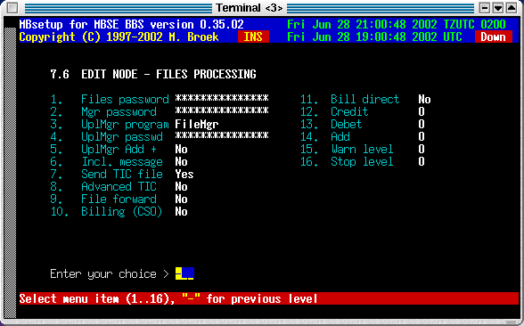
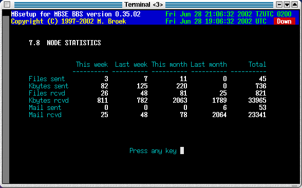

Last update 13-Jul-2002
MBSE BBS Setup - Fidonet nodes.
Introduction
Unlike many other bbs packages, for each node you need only one record. If you have a relation with a node for one network with costsharing, and other networks without costsharing you need two records for that node. For each node you can setup the aka's, mail, files and session handshake. There are eight screens for each node.
Edit general setup
This screen has the general information for the node. The contact info fields are just for private use, these fields are only used in this screen. The Outbox dir is for files to sent to the node, all file you put in there will be sent to the remote if user mbse has read/write access to the file. Only real files are allowed, not symlinks etc.
| Sysop name | The name of the system operator. The name entered here is used in Areamgr and Filemgr messages etc. |
|---|---|
| Outbox dir | Private extra outbound directory for this node. Any file dropped into this directory will be sent to the node and removed after it is sent. |
| Pvt. phone | Contact info, node private phone. |
| Pvt. fax | Contact info, node private fax. |
| Pvt. cellphone | Contact info, node cellphone (GSM). |
| Pvt. e-mail | Contact info, node e-mail address. |
| Pvt. remark | Contact info, node remark. |
| Route via | A route via Fido address. All mail for this node will be send via this Aka, even mail and files for other networks. This can be usefull if this node has internet access so you can send everything to this node over the internet. Note that to force calling this node via internetr, ISDN or pots can also be done by using nodelist flags override. See section 3. This setting is more usefull to force routing via another node or aka. |
| Netmail direct | Set "direct" flag in netmail to this node. |
| Netmail crash | Send netmail always "crash" to this node. |
| Netmail hold | Put mail on "hold" for this node. |
| Pack netmail | Should netmail be packed in arcmail archives. |
| Send notify | Send automatic generated notify messages. |
| Language | The language to use for areamgr msgs. |
| Deleted | If this node must be deleted. |

Edit nodes aka's
In this screen you can setup 20 aka's for the node.

Edit node session
In this screen you can setup the session defaults. Items 7 and 8 will be added later.
| Session passwd | This is the mailer session password. |
|---|---|
| Dial command | You can put an override here for the normal dial command. If you leave this empty the command from the modem setup is used. |
| Phone number 1 | An alternative phone number/ip address to dial. |
| Phone number 2 | An alternative phone number/ip address to dial. Use these above commands if the node has another phone number as mentioned in the nodelist. |
| Nodelist flags | Override for the nodelist flags, the nodelist flags are completly ignored if you enter something here so make sure all flags you need are here. All aka's of this node will use the same flags. This can be usefull to force calling this node via the internet. |
| Inet hostname | The FQDN hostname or IP address of this node. This replaces the original system name from the nodelist and this is then used to make the internet TCP/IP connection. This can be usefull if the FQDN is not present in the nodelist. |
| No EMSI | Disable EMSI handshake. |
| No YooHoo/2U2 | Disable FTSC-0006 handshake. |
| No Filerequest | Disable filerequest from this node. |
| Don't call | Do not call this node. |
| 8.3 names | Set this if the node only accepts 8.3 filenames. |
| No Zmodem | Disable Zmodem protocol. |
| No Zedzap | Disable Zedzap protocol. |
| No Hydra | Disable Hydra protocol. |
| No TCP/IP IBN | Disbale TCP/IP IBN (binkp) protocol. |
| No TCP/IP IFC | Disable TCP/IP IFC (ifcico) protocol. |
| No TCP/IP ITN | Disable TCP/IP ITN (telnet) protocol. |

Edit node - mail processing
| PKT password | The password to insert in .pkt files. |
|---|---|
| Check PKT pwd | Check password in received .pkt files. If not, errors or missing passwords are only logged. If set, errors or missing password are refused and the .pkt files are renamed to .bad |
| UplMgr program | The name of the Areamgr program of this node. This could be AreaFix, AreaMgr etc. |
| UplMgr passwd | The password for the Areamgr of this node. |
| Mail forward | Not in use yet. |
| ARCmail comp. | Use ARCmail 0.60 file naming convention for out of zone mail. |
| ARCmail a..z | Allow a..z last character for ARCmail filenames. |

Edit mail groups
Here you can tag which mail groups are available for this node. Note that all groups are visible here, even for networks this node has no aka's in. Be carefull not to allow a node to connect areas from networks he has no aka in.

File setup
| Files password | The password for .tic files. |
|---|---|
| Mgr password | The password for the Areamgr and Filemgr. |
| UplMgr program | The name of the Filemgr progrom of this node. This could be FileMgr, Allfix, Raid etc. |
| UplMgr passwd | The password of the Filemgr if this node. |
| UplMgr Add + | Add a "+" in the command to connect areas. |
| Incl. message | Send a netmail message for each file to send. |
| Send TIC file | Send .tic file to this node. |
| Advanced TIC | Send advanced or standard .tic files. |
| File forward | Forward TIC files for this node (not yet). |
| Billing | Is Costsharing active for this node. |
| Bill direct | Send the bill direct or on command. |
| Credit | The credit this node has in units. |
| Debet | The debet we have with this node (informational). |
| Add | Add (or substract) factor to the bill. |
| Warn level | The debet level when to write a warning mesage. |
| Stop level | The debet level when to stop sending files. |

File groups
The same story as for mail groups is true for the file groups.

Statistics
In this statistics screen you can see the mail and files flow with this node. Values are stored for the current week, the previous week, the current month and previous month and the overall total since you defined this node. There are actual 12 months of statistics stored in the nodes record, only 2 are visible.

 Back to index
Back to index